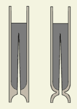
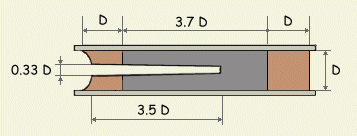

Ez az oldal leginkább a kezdeti kudarcokon elbizonytalanodó rakétaépítõk bátorítására íródott. Azt szeretném szemléltetni vele, hogy egyáltlán nem lehetetlen mûködõ rakétamotrot építeni egyszerû eszközökkel, hiszen már igen régen is képesek voltak rá a kor tûzszerészei. Középkori feljegyzésekbõl idézve "a rakéta a legegyszerûbb tûzijáték" amely - így visszaemlékezve - igencsak mérgesítõ kijelentésnek tûnt az elsõ motraim készítésekor, ezek ugyanis megfelelõ tolóerõ híján mind a kilövõállványon végezték. Az oldal megírásáért köszönettel tartozom egy kedves fórumtársunknak, aki részletes leírást postázott az "ezer éves eljárásról".
|  |
| 1. Ábra: XVI. sz.-i rakétaábrázolások |
Régi tûzszerészkönyvekben lapozgatva az 1. Ábrán láthatókhoz hasonló rakétarajzokkal találkozhatunk. A méreteket általában hiába keressük és ha van is valamilyen leírás a készítésrõl, az legtöbbször pontatlan és hiányos. A motor fala leginkább papírból készült, de olvastam már fából készült motorról is, az indokínai félsziget eldugott falvaiban pedig még most is bambusznádat használnak e célra. A hajtóanyag összetételének kiderítésénél sincs könnyû dolgunk: elõdeink általában a fekete lõpor valamilyen "gyengített" változatát használták rakéták készítésére, de nem volt egységes recept, mindenkinek más keverék vált be. Nem ritkák az olyan leírások sem, mint pl. "...Két font ostromágyúba való nagyszemû lõport egy marék finom lõporral rézmozsárban összeõrlünk, majd fél font akácfaszenet adunk hozzá...", ezek alapján pedig nem igazán lehet az összetevõk arányát kiszámolni. Általánosan elmondható, hogy ezen hajtóanyagok salétromot 50-75 %, ként és faszenet 10-30% arányban tartalmaztak. Érdekes módon a "kis" rakéták salétromban gazdagabb, a "nagy" rakéták pedig salétromban szegényebb (50-55%) üzemanyagot használtak. Szóval nincs könnyû dolga a "tuti receptet" keresõ rakétásnak, ha ilyen leírásokra támaszkodva szeretne rakétát építeni. Pedig ezek a rakéták igenis jól mûködtek, holott készítõiknek - mai szemmel nézve - igencsak hiányos ismereteik voltak a kémiáról illetve a fizika törvényeirõl. Mi több, hasonló rakétákat a mai napig használnak tûzijátéktöltetek magasba juttatására, hiszen a szénben gazdag üzemanyag miatt szép fényes csóvát húznak a sötét égre.
Hogyan is készítsünk hát ilyen rakétát? A lehetõ legegyszerûbben: üzemanyagként egy "átlagolt" lõport használunk (ha az összes fellelhetõ receptet átlagoljuk, akkor kb. a 67/22/11 salétrom/faszén/kén arányú klasszikusnak mondható keverékhez jutunk), a motorkészítéshez pedig itt a következõ általános leírás, amelyet levélben kaptam egy fórumozótól:
"A kaliber átmérõjû rövidke (~1/3-1/2 cal magas) hengeres talpra, aminek a közepén egy kiálló, a tövénél 1/3 a végén kb 1/6-od cal átmérõjû, kb 3.5-4.5 cal hosszú kissé kúpos tüske található, húzzuk a papírcsövet (a tüske talpa felül domború). Beadagolunk mintegy 1 cal-nyi száraz agyagport és az üreges töltõvesszõvel lenyomva 25-30 kalapácsütéssel erõsen leütjük. A hangsúly az erõsön van. Kb. teljes erõbõl ütve. Ezt megismételjük, a felesleget kiszórjuk, majd 1-1.5 kalibernyi keveréket szórunk bele és 35-40 erõs kalapácsütéssel leütjük. Ezt addig ismételjük, míg a tüske ~2/3 magasságáig a csõ meg nem telik. Ekkor a kisebb átmérõjû furattal ellátott másik üreges töltõvesszõvel folytatjuk, amíg a töltõtüske hegye már épp nem látszik. Utána még kb 1-1.5 cal tömör részt ütünk a tetejére tömör töltõvesszõvel, majd erre egy kalibernyi agyagport (csillagkamra gyújtásához ezt a felül levõ agyagdugót középen át kell fúrni). A kész rakétát óvatos csavaró mozdulatokkal a tüskérõl lehúzzuk. És kész. Ez kb 10 percnyi munka. Azonnal használható, jó a hagyományos BP keverékekhez mint pl. a 67:22:11=KNO3:C:S, de jó a 67:33=KNO3:cukorhoz is. Olcsó, bármibe beépíthetõ, de magában is használható. Hát kb. ez a hagyományos ezer éves töltési technika. Nem kell hozzá nedvesítés, a jól leütött keverék körömmel alig karcolható, stabil.
|  |
| 2. Ábra: Az "õsmotor" méretei (D = belsõ átmérõ) |
A fúvóka kiszakadásának egy õsi, de hatékony megakadályozási módja, hogy a papírcsövet még nedvesen leszûkítjük körkörösen, a szûkületet körbekötjük és száradás után erre töltünk rá. Ekkor vékonyabb agyagréteg is elegendõ. Az agyag hajlamos préseléskor szétnyomni a csövet, ez ellen a legegyszerûbb védekezés a vastag (>=5 mm) falú csõ. Persze ez némi plusz súlyt jelent, ezért kitalálták már rég a külsõ szorítópofákat is. Úgy néznek ki, hogy a papírcsõ külsõ átmérõjének megfelelõ belsõ átmérõjû csõ hosszában fel van hasítva 3 db 120 fokos cikkre. Kívül az egész kissé kúpos, hogy a ráhúzandó összetartógyûrûk leszedhetõek legyenek töltés után is, amikor már a rakéta jól belefeszült."
A leírásban a kaliber (cal) a motor belsõ átmérõjét jelenti. A fenti rajzot a leírás alapján készítettem, nem meglepõ módon nagyon hasonlít a régi ábrázolásokra. Látható, hogy a motornak igen hosszú égõcsatornája van, ebbõl kifolyólag a nagy fúvókaátmérõ ellenére is hamar felépül benne az üzemi nyomás. Ez egyben azt is jelenti, hogy meglehetõsen nagy tolóerõre és rövid üzemidõre számíthatunk. A méretekbõl arra lehet következtetni, hogy egy 15 mm-es belsõ átmérõjû motor kb. 1 sec alatt kiég, ebbõl pedig max. 0,5 másodpercig szolgáltat masszív tolóerõt.